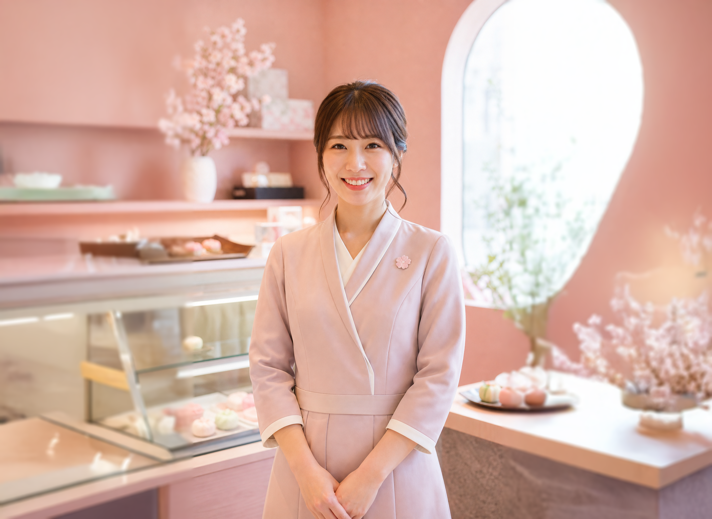

Over Wagashi House
Zoet, zacht en met zorg gemaakt
Wagashi House begon met een klein probleem: we konden weinig authentieke Japanse zoetigheden vinden die fris, speels en persoonlijk aanvoelden. Daarom begonnen we zelf mochi, matcha-lekkernijen en zachte seizoenscakes te maken voor vrienden.
Wat begon als een klein keukenidee is nu een team van vijf mensen die houden van zachte smaken, lieve details en desserts die de dag net iets lichter maken.
Ons team van vijf
Mika vormt de mochi, Hana test de cakerecepten, Sora houdt de matcha glad, Emi verpakt elke bestelling met zorg en Noor zorgt dat elke klant zich welkom voelt.